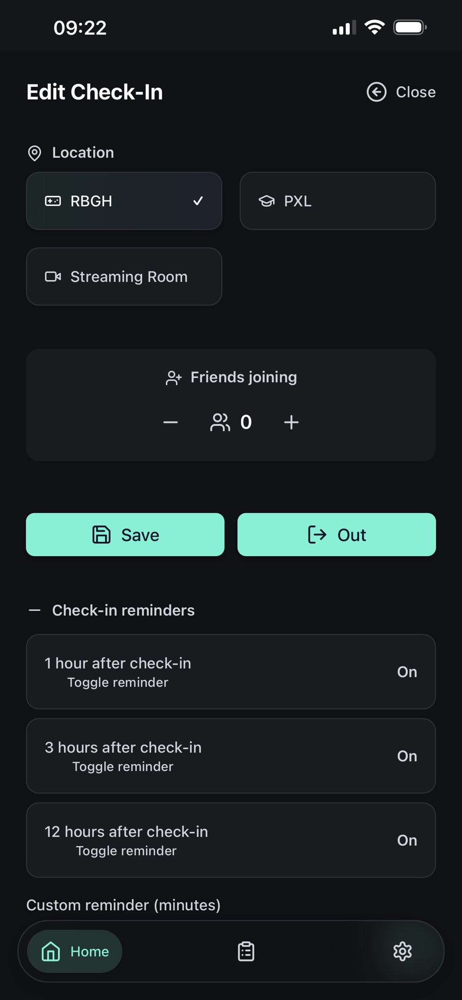
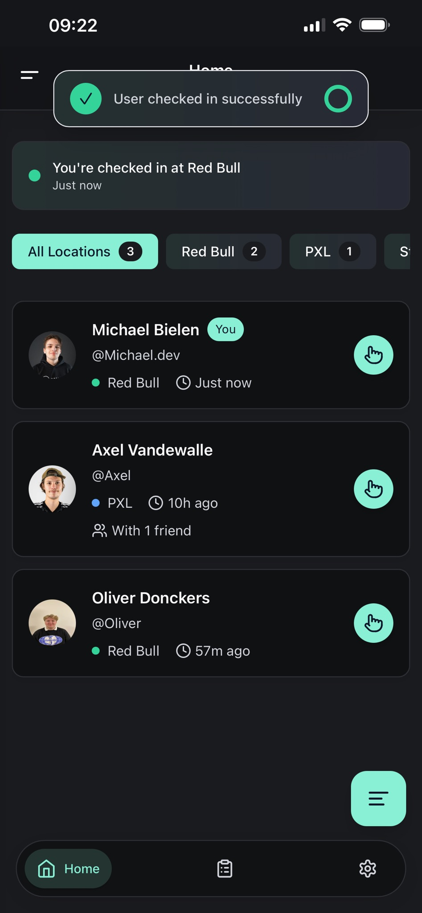
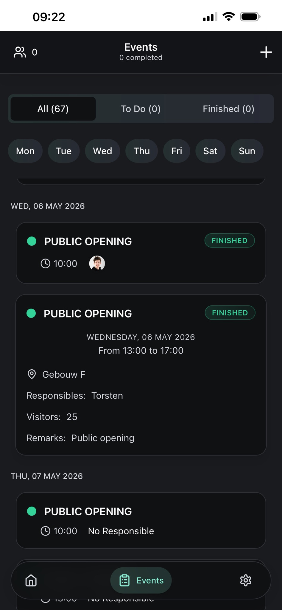
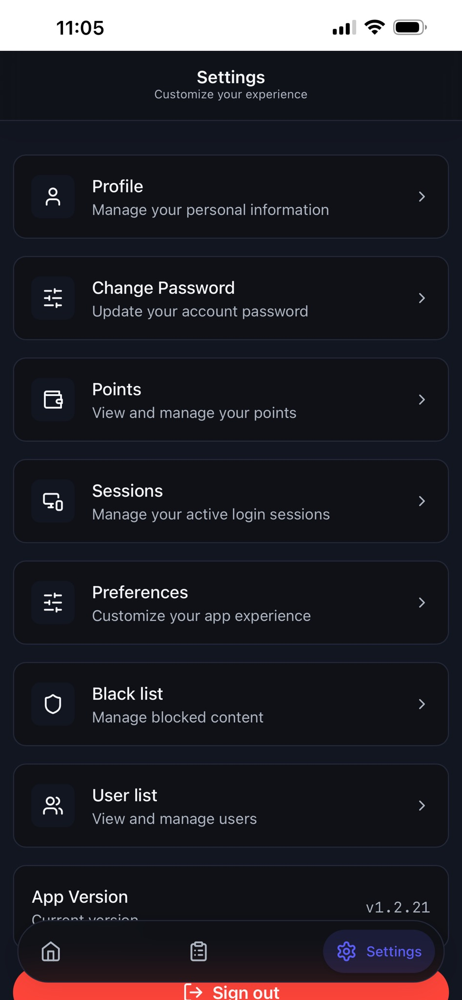

PXL Gaming Hub / RBGH App
Mijn belangrijkste project: een applicatie gebouwd in samenwerking met Ronan Stiers en Dries Bielen om de dagelijkse werking van de PXL Gaming Hub te digitaliseren en vereenvoudigen.
Kernfunctionaliteiten:
- Check-in systeem – Beheer van vrijwilligers en hun locaties met reminders
- Event management – Planning en registratie van activiteiten, toernooien en openingsuren
- User management – Rollen en permissies voor veilige en schaalbare werking
- RedBull Fridge – Voorraadtracking van verschillende RedBull edities
- Points systeem – Beloning van vrijwilligers voor hun inspanningen
- Spreadsheet export – Gegevens voor boekhouding en rapportering naar partners
Evolutie van het project:
V1 (2024): Flutter + Firebase backend – Eerste prototype met basis functionaliteiten.
V2 (2025): Herbouw met eigen server en backend – Betere performance, meer features, schonere code architectuur.
V3 (Heden): Derde herschrijving in C# met event-driven architecture – Volgt DDD-principes, agnostische services, sterke structuur voor langetermijnonderhoud.



